1과목: TCP/IP
1. C Class의 네트워크에서 호스트 수가 12개일 때 분할할 수 있는 최대 서브넷 수는?
2. 브로드캐스트(Broadcast)에 대한 설명 중 올바른 것은?
3. IP Header Fields에 대한 내용 중 옳지 않은 것은?
4. OSPF에 대한 설명으로 옳지 않은 것은?
5. IPv6 주소 체계의 종류로 옳지 않은 것은?
6. UDP에 대한 설명 중 옳지 않은 것은?
7. ICMP 프로토콜의 기능으로 옳지 않은 것은?
8. TCP/IP 환경에서 사용하는 도구인 ′Netstat′명령에서 TCP 및 UDP 프로토콜에 대한 통계를 확인할 때, 올바른 명령을 고르시오.
9. 초기화된 TCP SYN 메시지에 포함되는 값은?
10. SNMP에 대한 설명 중 올바른 것은?
11. 아래의 조건은 DNS 기록의 형식이다. 이에 해당되는 것은?
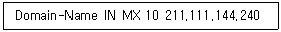
12. ARP 브로드캐스트를 이용해서 다른 장비에게 네트워크에 있는 자신의 존재를 알리는 목적으로만 사용되는 ARP 변형 프로토콜로, 같은 IP Address의 중복 사용을 방지하는 것은?
13. IPv6에 대한 설명으로 옳지 않은 것은?
14. '192.168.55.0'이란 네트워크 ID를 가지고 있고, 각 서브넷이 25개의 호스트 ID가 필요하며 가장 많은 서브네트를 가져야할 때 가장 적절한 서브넷 마스크는?
15. TFTP에 대한 설명 중 옳지 않은 것은?
16. 지역 네트워크 구획에서 호스트가 다른 호스트와 통신하려 할 때, ARP 과정을 서술한 것 중 옳지 않은 것은?
2과목: 네트워크 일반
17. TCP/IP 참조 모델에서 원격 호스트 간의 Data 전송 시 경로 결정 서비스를 제공하는 계층은?
18. MSPP (Multi Service Provisioning Platform)에 대한 설명이 올바르지 않는 것은?
19. 아래에서 설명하는 무선 통신 기술의 명칭으로 올바른 것은?
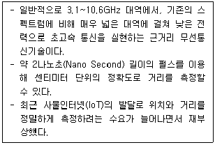
20. 홈오토메이션, 산업용기기 자동화, 물류 및 환경 모니터링 등 무선 네트워킹에서 10~20M 내외의 근거리 통신시장과 최근 주목받고 있는 유비쿼터스 컴퓨팅를 위한 기술로서, 저 비용, 저 전력의 저속 데이터 전송의 특징과 하나의 무선네트워크에 255대의 기기 연결이 가능한 이 기술은?
21. 다음 중 전진 오류 수정(Forward Error Correction) 방법은?
22. 데이터 전송 운영 방법에서 수신측에 n개의 데이터 블록을 수신할 수 있는 버퍼 저장 공간을 확보하고, 송신측은 확인신호 없이 n개의 데이터 블록을 전송하며, 수신측은 버퍼가 찬 경우 제어정보를 송신측에 보내서 송신을 일시 정지시키는 흐름제어는?
23. 물리계층의 역할이 아닌 것은?
24. 패킷 교환기의 기능으로 옳지 않은 것은?
25. 성형 토폴로지의 특징으로 옳지 않은 것은?
26. 원천부호화는 아날로그 정보(데이터)를 전송로에 효율적으로 전송하기 위해 디지털 신호(심볼)로 변환하고 압축하는 기술이라고 할 수 있다. 다음 항목 중 원천부호화에 해당하는 기술로 옳은 것은?
27. 다음 설명은 홈네트워크를 구축하기 위해서 사용하는 기술이다. (A),(B),(C)에 들어갈 적합한 용어를 순서대로 나열한 것은?
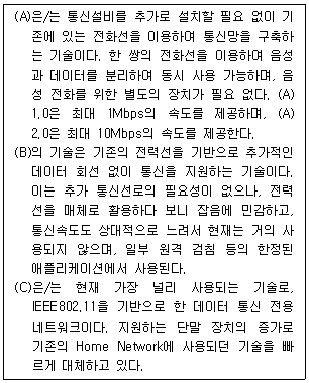
3과목: NOS
28. 다음 도메인 컨트롤러 구성 문제 해결을 위해 사용하는 프로그램 중 포리스트의 전반적인 상태를 확인하고 잘못된 구성을 파악하는데 사용하기 적합한 프로그램은?
29. Windows Server 2016에서 파워쉘을 이용해 명령어를 간략히 지정하고자 한다. Get-childItem명령어를 ll로 영구히 별칭을 지정하고 싶을 때 사용하는 명령어로 다음 중 적절한 것은?
30. 다음은 root 사용자에게만 ′/etc/passwd′파일의 ′rw′권한을 주었다. 그리고 ′/etc/passwd′파일을 icqa 사용자도 읽을 수 있도록 설정하였다. (A)에 해당하는 명령으로 알맞은 것은?
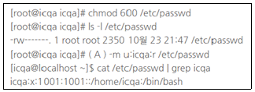
31. Apache 설정파일인 ′httpd.conf′에서 특정 디렉터리에 대한 접근방식을 ′All′로설정하고, 해당 디렉터리에 ′.htaccess′파일을 생성하여 옵션을 변경 할 수 있도록 해주는 설정은?
32. 서버 관리자 Scott 사원은 Windows Server 2016 운영체제를 기반으로 데이터베이스를 운영하고 있다. 데이터 저장장치의 분실에 의한 개인정보가 누출되지 않도록 하기 위하여 BitLocker 기술을 활용하고자 한다. BitLocker 기술에 대한 설명으로 옳지 않은 것은?
33. Linux 서버관리자가 DNS cache poisoning공격에 취약한 BIND서버의 DNS recursion 제한 설정을 하고자 한다. 설정할 파일(bind 9.2 이하) 이름은?
34. Linux에서 다음과 같은 옵션을 사용하여 사용자 계정을 추가한 경우 설명이 잘못된 것은?
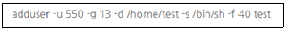
35. SOA 레코드에서 2차 네임서버가 1차 네임서버에 접속하여 Zone의 변경 여부를 검사할 주기에 해당되는 세부 설정항목은?
36. Linux에서 kill 명령어를 사용하여 해당 프로세스를 중단하려고 하는데, 중단하고자 하는 프로세스의 번호(PID)를 모를 경우 사용하는 명령어는?
37. 아래 내용은 Linux의 어떤 명령을 사용한 결과인가?
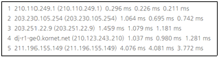
38. Linux 시스템에서 ′chmod 644 index.html′라는 명령어를 사용하였을 때, ′index.html′파일에 변화되는 내용으로 옳은 것은?
39. Windows Server 2016에서 ′www.icqa.or.kr′의 IP Address를 얻기 위한 콘솔 명령어는?
40. 서버 관리자 Park 사원은 Windows Server 2016 시스템의 부팅 과정에서 자동으로 실행되는 필수 관리 프로그램의 동작을 확인하려고 한다. 필수 관리 프로그램에 대한 설명으로 올바른 것은?
41. 서버 관리자 Park 사원은 Windows Server 2016 시스템의 디스크 사용에 대한 용량을 제한하는 쿼터를 설정하려고 한다. NTFS 쿼터와 FSRM의 용량 제한에 대한 설명으로 올바른 것은?
42. Windows Server 2016 Active Directory에 대한 설명으로 옳지 않은 것은?
43. Windows와 UNIX는 다른 로그 체계를 갖추고 있다. Windows는 이벤트(event)라고 불리는 중앙 집중화된 형태로 로그를 수집하여 저장한다. Windows 이벤트 뷰어에 표시되는 항목과 설명이 잘못 설명되어 있는 것은?
44. 서버 담당자 Park 사원은 레지스트리 편집기를 이용하여 화면 보호기가 작동하지 않도록 설정하고자 한다. 다음 중 화면보호기의 레지스트리 경로로 올바른 것은?
45. 서버 담당자 Park 사원은 다양한 방법으로 그룹 정책 개체에 관한 정보를 표시하고자 gpresult 명령을 사용하고자 한다. 이 명령은 클라이언트 컴퓨터나 서버에 적용되며, 적용할 정책을 결정할 때 특히 유용하며, 특정 정책이 적용되지 않은 이유를 알아내려 할 때 더욱 유용하다. 다음 중 gpresult 명령의 옵션에 대한 설명으로 올바르지 않은 것은?
4과목: 네트워크 운용기기
46. 라우터(Router)와 L3 스위치의 특징을 비교한 내용 중 바르게 설명한 것은?
47. 통신 네트워크에 관해서 부당한 액세스, 우발적 또는 고장에 의한 조작에의 개입이나 파괴로부터 네트워크를 보호하기 위한 수단의 총칭을 네트워크 보안이라 하는데 다음 지문에서 설명하는 보안위험 요소는?
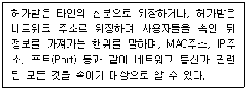
48. VLAN(Virtual LAN)에 대한 설명으로 올바르지 않는 것은?
49. 네트워크를 관리하는 Kim은 본사 네트워크의 보안 강화를 위하여 Fire Wall을 도입하게 되었다. 총무과 Lee의 요청으로 Lee의 집에서 FTP 서비스를 Lee의 본사 PC로 접속을 허용해달라는 요청을 받게 되었다. 다음 중 Kim이 Lee의 요청에 따라 FTP 서비스를 Fire Wall 정책에 입력 시 필요한 사항이 아닌 것은?
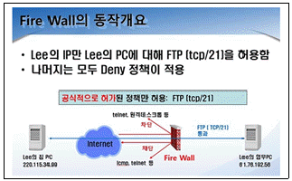
50. RAID에 대한 설명으로 올바른 것은?
5과목: 정보보호개론
51. 다음 지문이 설명하는 것은 무엇인가?
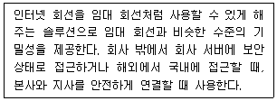
52. 다음 지문이 설명하는 제도는 무엇인가?
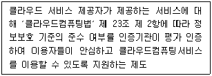
53. 다음에서 설명하는 기술은?
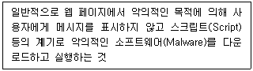
54. Session Hijacking이라는 웹 해킹 기법과 비슷하나, 사용자의 권한을 탈취 하는 공격 아니라 사용자가 확인한 패킷의 내용만을 훔쳐보는 기법은?
55. 다음 중 스니핑(Sniffing) 해킹 방법에 대한 설명으로 가장 올바른 것은?
56. 다음에서 설명하는 암호화 기술은?
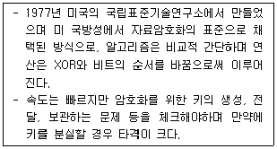
57. 방화벽(Firewall)에 대한 설명으로 옳지 않은 것은?
58. 네트워크를 관리하는 Kim은 사내에서 총무과 직원 Lee, 시설과 직원 Park 등 여러 직원들로부터 랜섬웨어(Ransomware)에 감염되었다는 소식을 들었다. 각종 보안장비 등의 Log를 분석한 결과 여러가지 경로를 통해서 랜섬웨어에 감염되었다는 것을 알게 되었다. 다음 중에서 Kim이 파악한 랜섬웨어에 감염되는 경로가 아닌 것은?
59. 다음 중 SDN(Software-Defined Networking) 특징이 올바른 것은?
60. 전자우편 보안기술 중 PEM(Privacy-enhanced Electronic Mail)에 대한 설명으로 옳지 않은 것은?